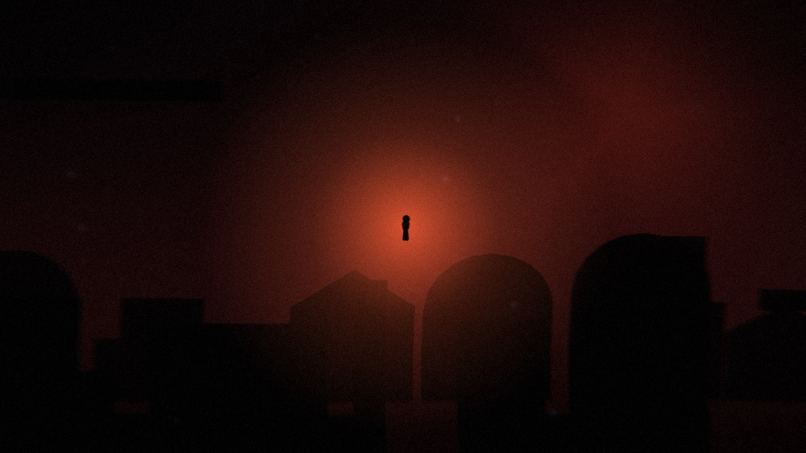
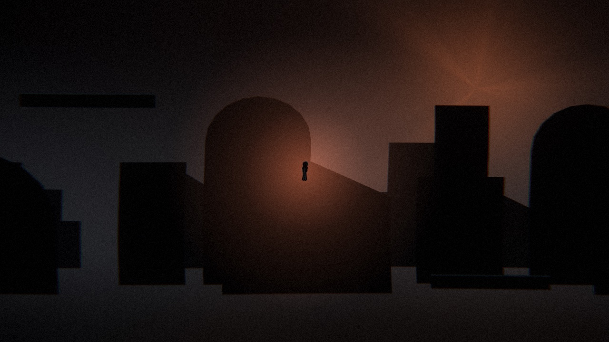
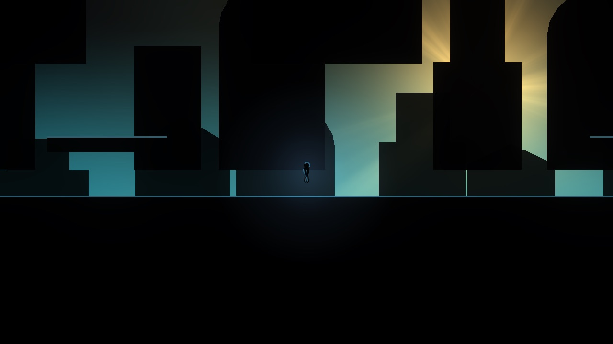

23 / project
Dream
An ambient platformer
You are dreaming. You win when you realise it. A 2D silhouette-and-light ambient platformer, built solo in Godot 4.5.




Status
M1 — “The Fall” is built and green: 21 headless assertions over the whole sequence.
M3 — the look was pulled forward and is roughed in. The world is still grey-box geometry underneath; what changed is everything wrapped around it — which is what the screenshots here show.
Engine
Godot 4.5
2D silhouette and light
Solo build
Godot 4.5
2D silhouette and light
Solo build
Repository — private
All work